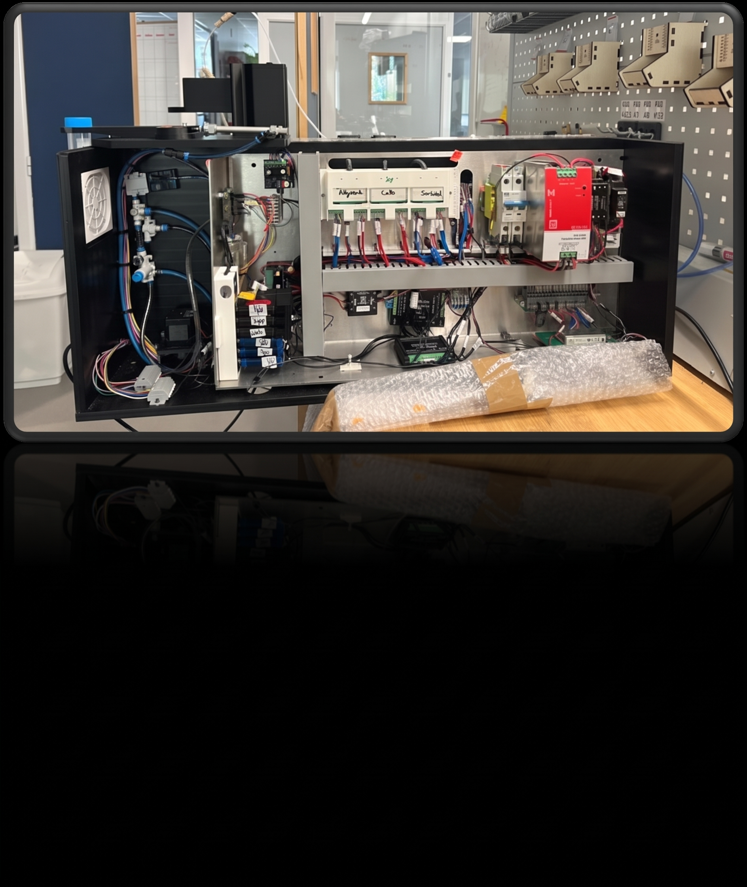

Diplomee de SUPMICROTECH ENSMM, specialisee en robotique industrielle, systemes embarques et electronique. Habituee a mener des projets de la conception a la realisation, de la CAO au cablage en passant par la programmation de robots industriels.
Programmation d'un bras collaboratif UR5e monte sur un robot mobile MiR 100 equipe d'un prehenseur Robotiq. Le programme complet couvre l'apprentissage de la carte de l'atelier, la navigation autonome entre la station de charge et les postes de travail, et l'execution de taches de manipulation pendant le deplacement. Ici, le robot efface un prenom sur un tableau blanc en se deplacant d'un point A a un point B.
Programmation en VAL3 d'un robot Staubli TX2-60 pour le suivi de contour avec regulation de force, la prise a la volee d'objets sur convoyeur, et la synchronisation d'axes. Le capteur effort integre au poignet permet de maintenir une force de contact constante le long de surfaces de forme quelconque.
Voir le code sur GitHubWorkspace ROS2 complet pour le robot WidowX-200 (4 DDL, servomoteurs Dynamixel). Inclut le modele geometrique direct et inverse (solution analytique et numerique Newton-Raphson/Levenberg-Marquardt), la planification de trajectoire MoveJ/MoveL/MoveC avec profils de vitesse trapezoidal et en S, et l'analyse Monte Carlo de l'espace de travail avec cartographie de dexterite.
Voir le code sur GitHub
Realisation electrique et electronique d'un encapsulateur de cellules souches pour la medecine regenerative. Le systeme comprend une regulation PID, une communication RS485, le pilotage de moteurs, et un systeme embarque Linux avec IHM tactile et telecommande operateur. CAO SolidWorks pour les supports mecaniques, prototypage par decoupe laser et impression 3D.
Robot d'assistance aux personnes a mobilite reduite. Commande embarquee Arduino, pilotage de moteurs, capteurs de distance et interface utilisateur.
C++ / ArduinoSysteme electromecanique de monte-escalier. Dimensionnement des actionneurs, commande Arduino et interface de supervision Python.
Python / ArduinoConception d'un prehenseur de robot industriel sur Creo Parametric. Le mecanisme utilise un verin pneumatique pour actionner un systeme de biellettes qui commande l'ouverture et la fermeture des mors de serrage.
Modelisation complete d'un reducteur a engrenages sur Creo Parametric avec vue eclatee. Le reducteur comprend un train d'engrenages cylindriques, les roulements de guidage des arbres et le carter d'assemblage.
Cinematique de suspension double triangulation, analyse de contraintes par elements finis et dimensionnement des ressorts de suspension d'un vehicule tout-terrain.
C#Fanuc, Epson, Staubli, UR5e, WidowX-200, MiR 100. Cinematique inverse, PID, MoveJ/MoveL, commande en force, vision par ordinateur (OpenCV, YOLO). ROS2.
Python, C/C++, Java, MATLAB, VAL3, Git, LaTeX. Programmation d'automates, commande embarquee, communication RS485.
SolidWorks, Creo Parametric, ANSYS. Impression 3D, decoupe laser, prototypage rapide.
Francais (bilingue), anglais (C1), arabe (langue maternelle), allemand (B1).